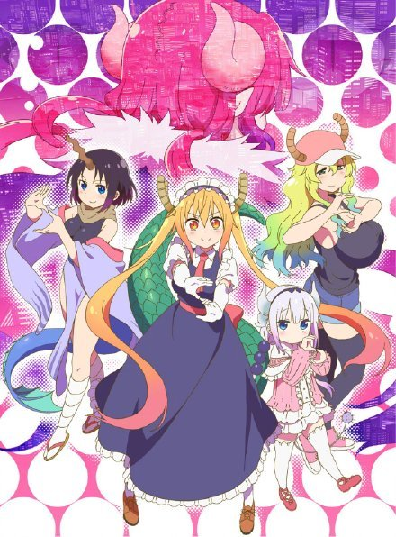
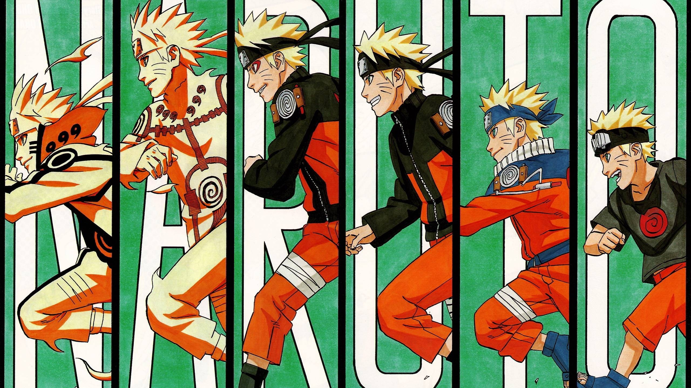
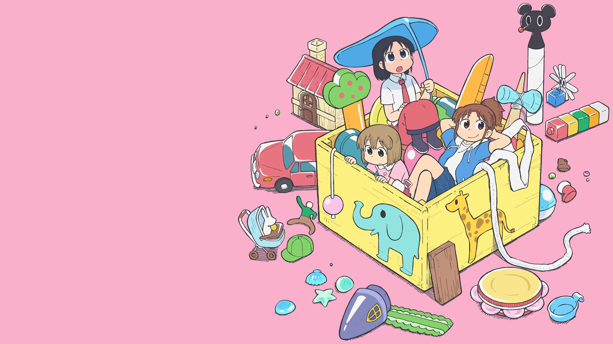

关于我 / About Me
你好！这里是 Tuoer_sama 的专属空间。
我是一个热衷于折腾各种稀奇古怪东西的高二学生。平时喜欢推图、打打音游、写写 Python 自动化脚本，偶尔也搞搞像素画和拼豆。
✨ 技能点 & 爱好：
osu!
Muse Dash
像素艺术
拼豆图纸制作
Python & Batch
我的追番列表
Click!
🎸 孤独摇滚！
点击进入 PDF 深度解析！
小林家的龙女仆 第一季

小林家的龙女仆S

火影忍者
街角魔族

猫咪日常
玉子市场

玉子爱情故事

小城日常

笨女孩
轻音少女

幸运星

日常 (Nichijou)
来点兔子吗？
幻想乡漫游指南
🌸
西行寺幽幽子
华胥的亡灵。吃货属性拉满。
🔥
藤原妹红
不老不死的蓬莱人，傲娇属性。
指尖跳动与像素魔法
🎵 节奏游戏档案
- 主攻项目： osu! / Muse Dash
- 现役外设： Wacom CTL-472
🎨 手工与代码产出
- 拼豆艺术： 常用像素生成器图纸。
- 实用脚本： 各种 Python 自动化、M4A转MP3。
孤独摇滚！
从壁橱走向世界的“吉他英雄”
- 2022年度最具共鸣的职场/校园番剧深度解析 -
纽带乐队：寻找属于自己的光芒
下北泽 STARRY Live House 里的四个灵魂，如何奏响跨越社交恐惧的乐章？

后藤一里
社交恐惧的极致写照。在壁橱苦练三年吉他。
名言：“只要练习吉他,我一定能成为现充……”
伊地知虹夏
乐队的天使与粘合剂。乐观且清醒的领队。
如果没有那次强行拉客，波奇也许永远在壁橱里。

山田凉
属性：怪人、吃草、冷面笑匠。
贝斯手。退出前乐队，在虹夏这里找到了“可以做自己”的地方。
喜多郁代
属性：现充、主唱、社交恐怖分子。
自带滤镜的超级外向者，乐队的光芒来源。
9.1豆瓣 (Douban)
9.9Bilibili
8.8MyAnimeList
No.1Oricon 榜单冠军
为什么它是必看的年度神作？
- 🎨 脑洞大开的演出： 不仅仅是2D动画，还融合了粘土、CG甚至实拍。
- 🎸 硬核的乐理细节： 从调音、扫弦到每一个指法的细节都高度还原。
- ❤️ 真实的共鸣感： 波奇的成长很慢，但每一步都充满了勇气，让人泪目。
波奇的成长历程(第一季)
第一站
加入纽带乐队
躲在芒果箱初演
第二站
STARRY打工
克服社恐的开端
第三站
路演相遇
遇到酒精大前辈
最终站
文化祭演出
成为“吉他英雄”


结束乐队 必听曲目
青春情结 (青春コンプレックス)
OP / Vocal: 喜多郁代
distortion!!
ED1 / Vocal: 喜多郁代
Karokara (カラカラ)
ED2 / Vocal: 山田凉
Nanimonone (なにが悪い)
ED3 / Vocal: 伊地知虹夏
那个乐队 (あのバンド)
第8话插曲 / Vocal: 喜多郁代
滚动的岩石，凌晨的彗星
翻唱 / Vocal: 后藤一里